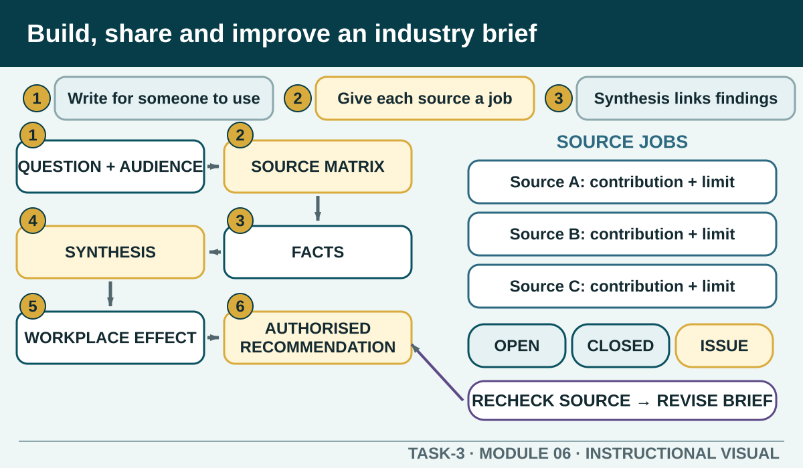

Prior learning
Recall the previous lesson and bring forward one question or completed learning artefact.
Task 3 · Lesson 6 of 6
Synthesise current hospitality information into a concise, traceable briefing that a colleague can use, then test understanding and improve the recommendation.
Prior learning
Recall the previous lesson and bring forward one question or completed learning artefact.
Success criteria
Learning boundary
This lesson supports preparation and formative practice. The current authorised package and trainer/assessor control formal products, observations, dates and submission.
An industry brief is shorter than a research report but still traceable. It tells a named audience what they need to know, why it matters for their work and what next step the evidence supports. The opening should state the focused question, role or context and decision without making the reader search for the purpose.
Audience changes emphasis, not accuracy. A new worker may need plain language and a clear local confirmation point. A supervisor may need the evidence difference, operational effect and decision required. Both need sources and limitations that can be checked.
A defensible learning brief uses multiple source types and records what each contributes. The current unit's performance evidence includes sourcing and documenting industry information using at least three information sources. This package uses a three-source practice pattern, while the current authorised assessment package controls the formal evidence students must submit.
Build a matrix with source authority, status or period, relevant finding, contribution and limitation. One source may establish a requirement, another current industry context and another workplace application. Do not count duplicate copies or several pages from the same unsupported claim as independent confirmation.
A source-by-source list makes the reader do the thinking. Synthesis groups evidence around the workplace question. It shows where sources agree, where they address different parts of the issue and where their scope prevents a direct comparison.
Use linking language carefully: both sources indicate, the regulator establishes while the industry profile provides context, or the workplace source applies the public guidance locally. If a source conflicts, explain why or name the unresolved issue. Never change a number or remove a limitation to make the paragraph sound smoother.
A useful application names the affected duty, skill, product, service, supplier relationship or team process. The recommendation states who could take the next action, what is within that role and what requires approval. It also includes a way to check whether the action improves performance.
Avoid absolute language unless the responsible source uses it for the same scope. A brief can recommend checking, briefing, trialling, updating, asking or escalating. It cannot invent a workplace rule, declare legal compliance, approve a purchase or promise a result.
Useful feedback identifies what was clear, what could not be traced, where the scope was too broad and whether the recommendation could be acted on. Revise the evidence matrix or limitation when needed, not only the formatting. Keep a simple note of the change and reason.
Before sharing the final version, run a privacy and source-boundary check. Remove real people, customer data, student work, protected workplace records and unsupported local claims. Confirm that links work, reference periods are visible and the recommendation still matches the finding.
Phone view: swipe across the diagram, or use Open larger below.

Formative practice
Each option explains the workplace consequence. These responses save on this device.
Written application
Apply and keep evidence
Turn a current hospitality issue into a cautious workplace recommendation supported by two credible sources.
Use the check result, activity record and written response as formative learning evidence only. Formal evidence remains controlled by the current package and trainer/assessor.
Next: review the task hub, selected evidence and teacher-confirmed assessment direction.
Authorised source note: Sourcing and documenting current information, interpreting and sharing multiple knowledge domains, applying a finding to work performance, written summary and probe questioning are source-supported. The three-source pattern reflects current unit performance evidence but does not reproduce or replace the local assessment package. Source references: TAS-2026-2027, TEACHER-T3-RESOURCE, SITE-T3-V2, TGA-SITHIND006, TGA-SITHIND006-AR.